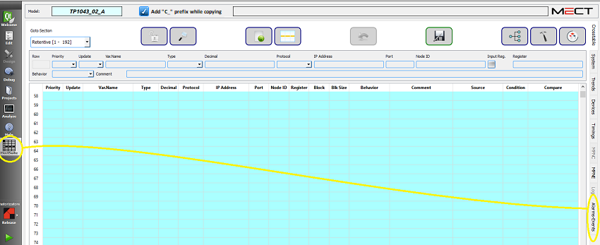
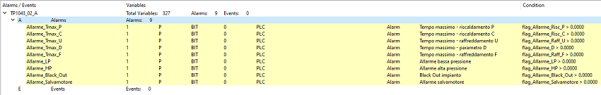

The "Alarms-Events" tab allows you to view all the alarms and events variables.

The interface is as follows:

This screen displays all the information of the variables defined as alarms or events.
The table is in READ-ONLY mode. By clicking on the desired variable you can directly access the Crosstable Editor where you can modify the data.